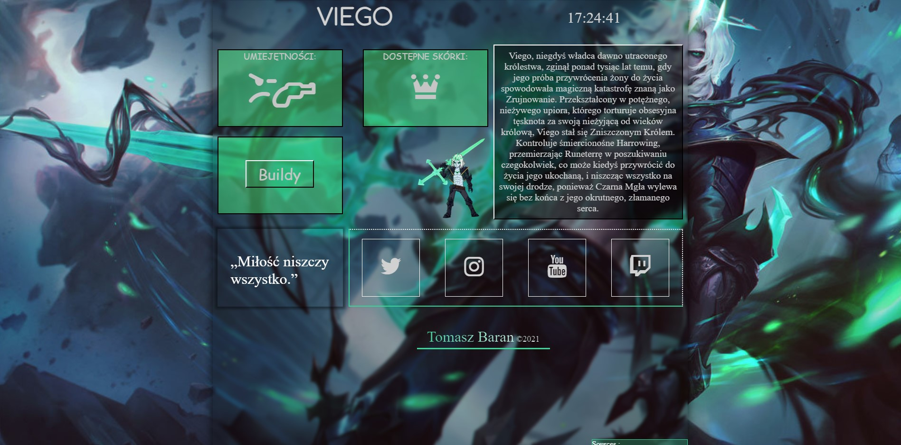
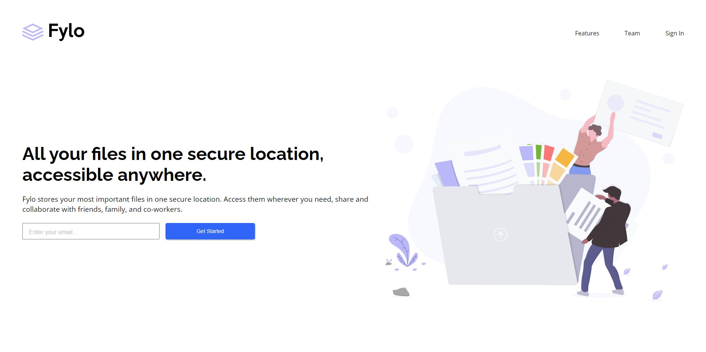

Grey Dev
Witam na mojej stronie!
Nazywam się Tomasz jestem frontendowym samoukiem, szkole się we własnym zakresie w kierunku fronendowym bez studiów czy bootcampów. Staram się samemu rozwijać i przyswajać wiedzę, aby z każdym dniem stawać się coraz lepszym i wydajniejszym w swojej pracy czy projektach. Swoją przygodę zacząłem parę miesięcy temu, po zakończeniu edukacji oraz otrzymaniu certyfikatów zawodowych dalej rozwijam się w kierunku mojego wykształcenia.
Znane technologie:
- HTML
- CSS
- Sass/Scss
- JavaScript
- PHP (Podstawy)
- SQL (Podstawy)
Planowany rozwój:
- TypeScript
- Angular JS
- Bootstrap
Mój pierwszy projekt, który zrobiłem na potrzeby szkolne, ale też w ramach zapoznania się z budową strony typu Multi-Page.
Jeden z większych projektów gdzie cele było stworzenie strony Landing-Page. Zauważyłem w nim parę mankamentów związanych z RWD (Responsive Web Design) oraz to, że responsywność sprawiła mi trochę problemów, ale z czasem starałem się wyszlifować umiejętność pisania responsywnych stron.
Pierwszy projekt z użycie technologi "syntactic superset" czyli TypeScripta. Projekt w ciągłej fazie rozwoju, staram się nauczyć jak najwięcej na temat TS oraz obsługi "koszyka".